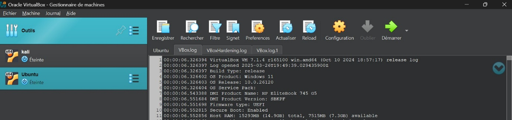
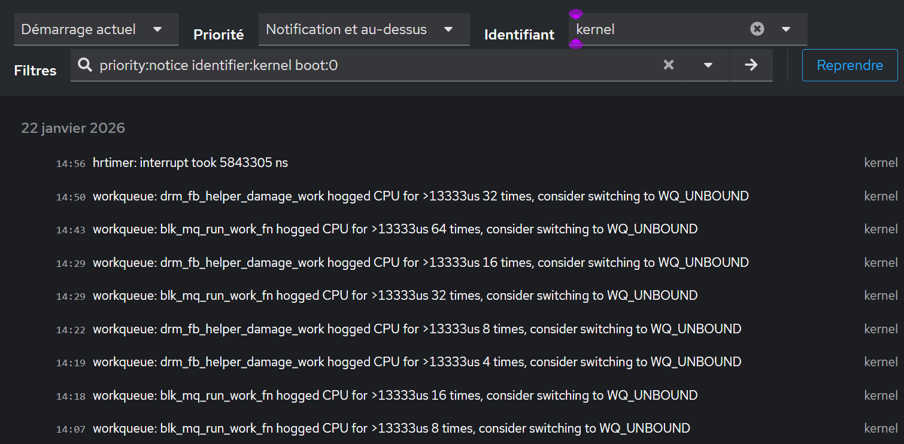
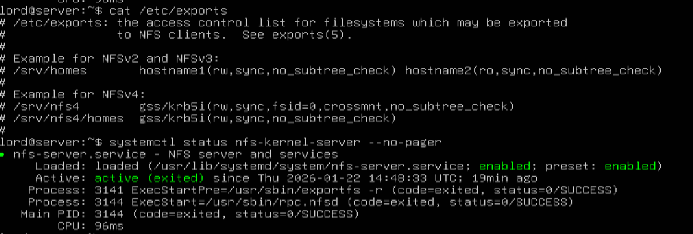
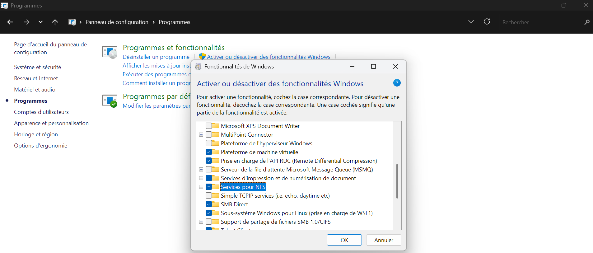
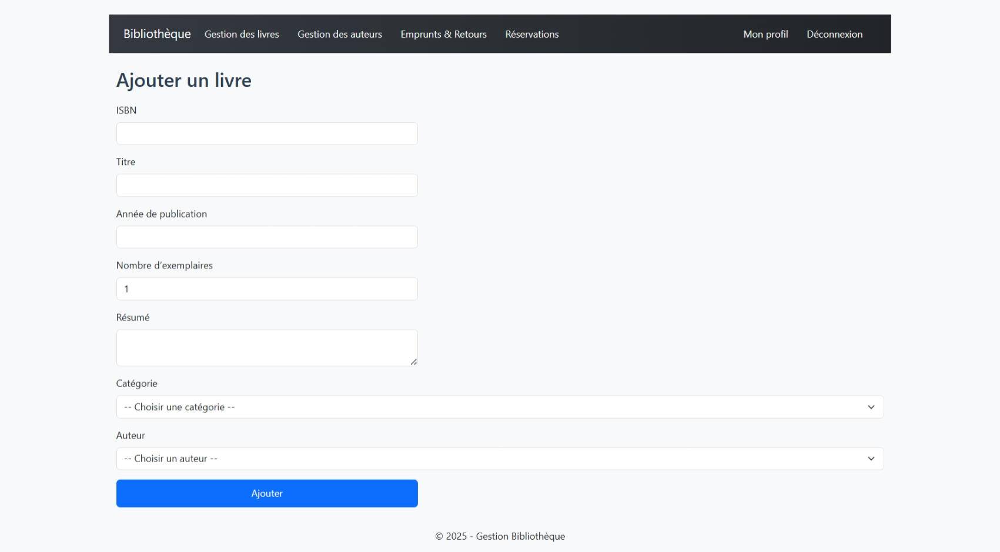

Clonage de Machines
Virtuelles
Full Clone · Linked Clone · Sysprep · Bonnes Pratiques
Membre du groupe
- Introduction au clonage de machines virtuelles
-
Les différentes méthodes de clonage
- Clonage complet (Full Clone)
- Clonage lié (Linked Clone)
-
Cas d'utilisation et limites
- Cas d'utilisation du clonage complet
- Cas d'utilisation du clonage lié
- Limites du clonage complet
- Limites du clonage lié
-
Clonage avec hyperviseur de type 2
- Clonage avec Oracle VirtualBox
- Pratique clonage intégral
- Pratique clonage lié
- Clonage avec VMware Workstation
-
Préparer et cloner pour Hyper-V avec Sysprep
- Qu'est-ce que Sysprep ?
- Désactiver BitLocker
- Lancer Sysprep
- Clonage à partir d'un modèle VHDX
- Conclusion
- Références
Introduction au clonage de machines virtuelles
Le clonage de machines virtuelles est une technique essentielle dans les environnements informatiques modernes. Il consiste à créer une copie exacte d'une machine virtuelle existante, incluant son système d'exploitation, ses configurations, ses logiciels et ses données. Ce processus permet de gagner du temps et d'assurer la cohérence dans le déploiement de plusieurs environnements identiques.
L'historique du clonage virtuel remonte aux années 2000, avec l'essor de la virtualisation introduite par des entreprises comme VMware. À cette époque, l'optimisation des ressources matérielles était une priorité. Le clonage est ainsi devenu une réponse efficace aux besoins croissants de flexibilité, de rapidité de déploiement et de standardisation dans les infrastructures informatiques.
Aujourd'hui, il est couramment utilisé pour les tests, les environnements de développement, la formation et le déploiement en masse de systèmes homogènes.
Les différentes méthodes de clonage
Nous avons deux principales méthodes de clonage :
1 Clonage complet (Full Clone)
Le clonage complet consiste à créer une copie totalement indépendante d'une machine virtuelle (VM) existante. Toutes les données de la machine virtuelle d'origine sont entièrement dupliquées, y compris les fichiers du disque dur virtuel, les paramètres et les instantanés. Chaque fichier est copié séparément, ce qui fait que le clone ne dépend en rien de la machine source. Il s'agit donc d'une nouvelle machine autonome, capable de fonctionner même si la VM d'origine est supprimée ou modifiée.
✅ Avantages
- Autonomie totale : La machine clonée reste pleinement fonctionnelle même si la VM source est supprimée ou modifiée.
- Meilleure stabilité à long terme : L'absence de dépendances garantit que le clone évoluera sans problème avec le temps.
⚠️ Inconvénients
- Temps de création plus long : Le processus peut être lent, surtout si la VM source est volumineuse.
- Occupation importante d'espace de stockage : Chaque clonage complet double les besoins en espace disque.
2 Clonage lié (Linked Clone)
Le clonage lié permet de créer une machine virtuelle dérivée d'une autre, tout en partageant le disque dur virtuel de la machine source. Contrairement au clonage complet, seules les différences entre la machine d'origine et le clone sont enregistrées. Cela signifie que le clone dépend de la machine virtuelle source pour fonctionner, car il n'en contient pas une copie complète. Il fonctionne comme une extension, stockant uniquement ses propres changements dans un fichier différentiel tout en lisant le reste des données depuis le disque de la source.
✅ Avantages
- Création très rapide : Le processus est presque instantané.
- Économie d'espace disque : Seule une fraction des données est dupliquée.
⚠️ Inconvénients
- Dépendance à la machine source : Si la VM originale est supprimée, toutes les VM liées deviennent inutilisables.
- Performances parfois réduites : Surcharge possible du disque partagé avec de nombreux clones.
Cas d'utilisation et limites du clonage
1 Cas d'utilisation du clonage complet
Cas 1 : Déploiement de serveurs web pour répartition de charge
Synopsis : Le Super Marché CHAMPION a besoin de deux serveurs web identiques pour gérer les pics de trafic. Les serveurs doivent être identiques pour assurer une répartition de charge.
Mise en œuvre : L'équipe IT configure une VM avec Ubuntu Server, Nginx, et une application web, puis utilise VMware Workstation pour créer un clone complet. Les deux VM sont déployées sur des hôtes différents, chacune avec sa propre IP (ex. : 192.168.1.10 et 192.168.1.11).
Avantages : Les deux serveurs fonctionnent en toute autonomie. Une panne d'un hôte n'impacte pas l'autre. Possibilité de réplication rapide pour ajouter un 3e serveur en cas de besoin.
Cas 2 : Hébergement client sur VM dédiée
Synopsis : Une société d'hébergement fournit à ses clients des serveurs personnalisés avec CMS, bases de données et accès FTP.
Mise en œuvre : Une VM de base est clonée en mode complet pour chaque nouveau client, puis personnalisée (nom d'hôte, configurations spécifiques, sécurité).
Avantages : Chaque client dispose d'un environnement isolé. Les modifications sur une VM n'affectent pas les autres. Les clients peuvent être autonomes dans la gestion de leurs machines.
Cas 3 : Sauvegarde de sécurité avant mise à jour critique
Synopsis : Un administrateur doit mettre à jour le noyau Linux sur une machine critique.
Mise en œuvre : Avant l'opération, il crée un clone complet de la VM. En cas d'échec de la mise à jour, il peut revenir facilement à l'état initial.
Avantages : Le clone est une sauvegarde autonome prête à l'emploi. Aucune dépendance à la VM d'origine. Possibilité de redéploiement immédiat.
2 Cas d'utilisation du clonage lié
Cas 1 : Formation technique à grande échelle
Synopsis : Lotié Telecom organise une formation Linux à la demande d'une entreprise cliente pour ses 10 employés. Chaque participant doit avoir un environnement identique pour pratiquer.
Mise en œuvre : Le formateur configure une VM avec Ubuntu, des fichiers d'exemple, et un terminal, puis utilise VMware Workstation pour créer 10 clones liés. Chaque employé accède à son clone via un client léger. À la fin de la formation, les clones sont supprimés sans encombrer le stockage.
Avantages : Déploiement des clones en moins de 5 minutes (contre 30 pour un clonage complet). Parfait pour des environnements éphémères.
Cas 2 : Tests de logiciels dans un environnement isolé
Synopsis : Un développeur doit tester une nouvelle version d'un programme sans affecter son environnement principal.
Mise en œuvre : Il crée un clone lié de sa VM de travail, installe le logiciel, fait ses tests, puis supprime la VM.
Avantages : Création rapide d'un environnement de test. Aucun risque de polluer la machine de base. Peu de ressources consommées.
3 Limites du clonage complet
- Consommation importante d'espace de stockage : Chaque clone duplique entièrement les fichiers de la VM, ce qui peut rapidement épuiser les ressources.
- Temps de création prolongé : La copie intégrale peut prendre de plusieurs minutes à des heures selon la taille.
- Risque de conflits d'identité : Sans reconfiguration, les clones peuvent partager les mêmes adresses IP, MAC ou noms d'hôte.
- Coût de maintenance élevé : Gérer plusieurs clones indépendants augmente la charge administrative.
4 Limites du clonage lié
- Dépendance à la VM source : Toute modification ou suppression de la source rend les clones inopérants.
- Dégradation des performances : L'accès partagé peut provoquer des goulets d'étranglement.
- Limitation de la durée d'utilisation : Conçu pour des usages temporaires.
- Complexité en cas de mise à jour de la source : Les clones ne reflètent pas automatiquement les changements.
Clonage avec hyperviseur de type 2
A Clonage avec Oracle VirtualBox
Interface de VirtualBox :

Image non disponible : interface VirtualBox'">Pour procéder au clonage, trois possibilités :
- Raccourci clavier CTRL + O
- Menu Machine > clic droit
- Clic droit sur la machine à cloner


Explications des options :
- Nom et emplacement du clone : Nom unique et dossier de stockage.
- Type de clonage :
- Clone intégral : Copie indépendante
- Clone lié : Dépend de la source
- Options supplémentaires :
- Adresses MAC : inclure ou générer de nouvelles adresses
- Préserver les noms de disque
- Garder les UUID matériels
Pratique clonage intégral
Configuration : nom "clone ubuntu", dossier par défaut, clone intégral.


Pratique clonage lié
Configuration identique mais avec clone lié.
B Clonage avec VMware Workstation
Clonage lié :

Menu "Manage" → "Clone"


Choix du type de clone :

- Créer un clone lié : référence la source, moins d'espace
- Créer un clone complet : copie indépendante


Résultat : VM Windows Server 2016 clonée avec ses paramètres :
- Nom : Clone of Windows Server 2016
- Mémoire : 2 GB
- Processeur : 2
- Disque dur (SCSI) : 40 GB
- Disque dur (NVMe) : 60 GB
- CD/DVD (SATA) : Windows Server 2016.iso
- Carte réseau : Mode Host-Only
Clonage intégral : mêmes étapes mais choisir "clone complet"
Préparer et cloner une machine pour Hyper-V avec Sysprep
1 Présentation
Dans cet exemple, une machine virtuelle sous Hyper-V est utilisée pour préparer un modèle de machine virtuelle. Le disque dur virtuel pourra être dupliqué à souhait après cette opération.
2 C'est quoi un SYSPREP ?
SYSPREP (System Preparation Tool) est un outil fourni par Microsoft sur les systèmes d'exploitation Windows. Il est principalement utilisé pour préparer une machine Windows avant de la dupliquer ou de la déployer sur d'autres ordinateurs.
Problèmes sans Sysprep : Le clonage sans Sysprep pose des problèmes car certains éléments doivent être uniques, comme le nom de l'ordinateur et le SID (identifiant de sécurité), notamment en environnement Active Directory.
Sysprep résout ces problèmes en :
- Réinitialisant le SID pour éviter les conflits
- Activant le mode OOBE (première expérience de démarrage)
- Généralisant l'image pour différents matériels
3 Effectuer le SYSPREP sur Windows
a. Désactiver BitLocker

Vérification :
b. Lancer l'opération de SYSPREP
Accédez à : C:\Windows\System32\Sysprep


Configuration :
- Mode OOBE (Out-of-Box Experience)
- Cocher "Généraliser"
- Option d'extinction : "Arrêter le système"

En ligne de commande :
Remarque : pour une machine physique, retirer l'option /mode:vm
4 Clonage d'une machine virtuelle Hyper-V à partir d'un modèle VHDX
Étapes à suivre :
- Créer une nouvelle machine virtuelle sans disque dur
- Copier le disque VHDX modèle dans le répertoire de la nouvelle VM
- Renommer le fichier VHDX
- Ajouter le disque dur dans les paramètres de la VM



Au démarrage, la VM finalisera l'installation comme une nouvelle machine (OOBE).
Conclusion
En somme, le clonage de machines virtuelles est une pratique incontournable dans la gestion des infrastructures informatiques modernes, offrant flexibilité, rapidité et standardisation dans le déploiement d'environnements numériques. Les deux principales méthodes, le clonage complet et le clonage lié, répondent à des besoins distincts : le premier garantit une autonomie totale, idéale pour des environnements critiques ou permanents, tandis que le second optimise les ressources pour des usages temporaires ou à grande échelle.
Cependant, chaque approche présente des limites, telles que la consommation d'espace pour le clonage complet ou la dépendance à la machine source pour le clonage lié, nécessitant une planification rigoureuse.
L'utilisation d'hyperviseurs comme VirtualBox, VMware Workstation ou Hyper-V facilite grandement le processus de clonage tout en assurant la compatibilité et l'unicité des machines déployées. En somme, le clonage de machines virtuelles est un levier puissant pour les administrateurs et les développeurs, permettant d'optimiser les ressources, de réduire les coûts et d'accélérer la mise en œuvre de solutions informatiques, à condition de bien maîtriser ses techniques et ses contraintes.